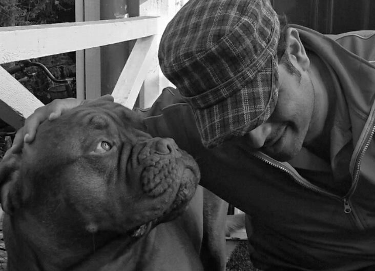

In scientific language, photography is recording of light, either electronically by means of an image sensor, or chemically by means of a light-sensitive material such as photographic film. If you want to learn photography, it is always a good idea to start with the basics. We need to understand the relationship between the three main features of a camera, the aperture, the shutter speed and ISO . In simple words, we can relate the camera lens to a human eye. Aperture is like the Iris in a human eye which expands at night allowing more light to enter and contracts in day time limiting the excessive amount of light to enter the eyes (auto focus feature that is built in human eye). Shutter speed can be best related to your eyelids....the faster you close, the less light will enter the iris and vice versa. IS0 is the sensor's sentivity to light. Film cameras have the option of having the film (35mm /24mm) with ISO 100,200,400,800. Modern cameras have replaced films with modern sensors (full frame sensor/ cropped frame sensor) with sesitivity as high as ISO 12000. It depends, what kind of photographs one would like to capture. For sports, one need to use high ISO in order to get the motion captured. One should realize that photography is a vast field, and it takes a lot of patience and practice to reach at the professional level. “Your first 10,000 photographs are your worst.” ― Henri Cartier-Bresson

I still remember the day when I brought him home. He was only 8 weeks old. He was very playful and friendly. Three years passed in the blink of an eye and our friendship grew stronger.
I still remember when he barked at Martin. He was afraid to death. I don't understand why he always bark at him.